Директор салона красоты — это ключевая фигура, от которой зависит эффективность салона, качество услуг и развитие бизнеса в сфере индустрии красоты. Чтобы управлять салоном, разрабатывать стратегии продвижения услуг и повышать квалификацию персонала, руководителям салонов и владельцам бизнеса необходимо пройти профессиональную переподготовку. Сегодня обучение директором салона доступно в разных форматах — от очных программ до дистанционного образования, позволяющего совмещать учебу с работой. Курсы управляющего салоном включают практические навыки по менеджменту, маркетингу, финансовому планированию и управлению персоналом. После успешного прохождения обучения слушатели получают официальный диплом, подтверждающий квалификацию руководителя в сфере индустрии красоты. Мы составили рейтинг программ, где обучение проходит с упором на современные инструменты управления и повышение эффективности салонов красоты.
Информация обновлена:
ТОП онлайн-курсов обучения менеджменту для директора салона красоты
- 🏆 MBA по менеджменту в индустрии красоты – Московская Бизнес Академия (по промокоду onlinekursy скидка 🎁 10%)
- 🏆 Менеджмент в индустрии красоты – Московская Бизнес Академия (по промокоду onlinekursy скидка 🎁 10%)
- 🏆 Директор салона красоты – Академия Eduson (по промокоду kursy скидка 🎁 5%)
- Управляющий в индустрии красоты и здоровья – Moscow Business School
- Как открыть прибыльный бизнес в beauty-индустрии: от лицензии до экономики – Moscow Business School
- Менеджмент в индустрии красоты – МИПО (по промокоду onlinekursy действует скидка 🎁 10% )
- Менеджмент в индустрии красоты – МИПО (по промокоду onlinekursy действует скидка 🎁 10% )
- Менеджмент в индустрии красоты – МИПО (по промокоду onlinekursy действует скидка 🎁 10% )
- Менеджмент и сервис в индустрии красоты – ИПО
- Менеджмент в индустрии красоты – Skillbox
- Успешный руководитель beauty-бизнеса – Академия красоты Эколь
- Директор салона красоты – Учебный центр «НЦПО»
- Директор салона красоты – Бизнес Академия МБА СИТИ
- Менеджмент и администрирование в бьюти индустрии – Academy Standart
- Директор салона красоты – Международная Академия Бизнеса
Бесплатные курсы по обучению на директора салона красоты
- Администратор салона красоты, бесплатно – Stepik
- Бесплатный курс для руководителей салонов красоты – CleverBox:CRM
Отличительные преимущества каждой дистанционной программы обучения на Директора салона красоты
| № | Название курса и школа | Отличительные преимущества | |
|---|---|---|---|
| 🥇 | MBA по менеджменту в индустрии красоты – Московская Бизнес Академия | Международный диплом MBA с внесением в ФРДО, акцент на стратегию управления и digital-инструменты, гибкий график и карьерное сопровождение. | Перейти |
| 🥈 | Менеджмент в индустрии красоты – Московская Бизнес Академия | 9-месячная программа, 70% практики, актуальные кейсы 2025 года, диплом международного образца и карьерные консультации. | Перейти |
| 🥉 | Директор салона красоты – Академия Eduson | 188 интерактивных уроков, 34 кейса и 48 тренажёров, пожизненный доступ к материалам, бизнес-сессия с экспертом. | Перейти |
| 4 | Управляющий в индустрии красоты и здоровья – Moscow Business School | Краткосрочный интенсив (5 дней), формат очно/онлайн, диплом гос. образца, 85% выпускников получают повышение. | Перейти |
| 5 | Как открыть прибыльный бизнес в beauty-индустрии – Moscow Business School | 3-дневный курс-практикум, юридические и финансовые аспекты открытия салона, реальные кейсы и консультирование экспертов. | Перейти |
| 6 | Менеджмент в индустрии красоты – Московский институт профессионального образования | 8-месячный курс, диплом о профпереподготовке, современные маркетинговые инструменты, кураторская поддержка. | Перейти |
| 7 | Менеджмент в индустрии красоты – МИПО (MBA-программа) | Диплом MBA международного уровня, 2700 часов обучения, диплом с Diploma Supplement, эксперты-практики и индивидуальные кураторы. | Перейти |
| 8 | Менеджмент в индустрии красоты – МИПО | 9-месячная программа MBA, обучение с кураторами, акцент на управление персоналом и маркетинг, возврат 13% налога. | Перейти |
| 9 | Менеджмент и сервис в индустрии красоты – ИПО | До 5 месяцев обучения, диплом "Руководитель салона красоты", карьерная поддержка, экстернат и гибкий график. | Перейти |
| 10 | Менеджмент в индустрии красоты – Skillbox | Курс совместно с сетью «Персона», 14 модулей за 3 месяца, живая практика, встречи с топ-менеджерами, пожизненный доступ. | Перейти |
| 11 | Успешный руководитель beauty-бизнеса – Академия красоты Эколь | Гибридный формат (очно+онлайн), 80% практики, возможность обучения за счёт государства, помощь в трудоустройстве. | Перейти |
| 12 | Директор салона красоты – Учебный центр «НЦПО» | Минимальная стоимость (от 3 900 ₽), лицензия Минобр, диплом в ФИС ФРДО, гибкий график и поддержка преподавателей. | Перейти |
| 13 | Директор салона красоты – Бизнес Академия МБА СИТИ | Онлайн-формат, диплом и международный сертификат ISO 9001:2015, обучение по стандартам ФРДО, гибкий график. | Перейти |
| 14 | Менеджмент и администрирование в бьюти-индустрии – Academy Standart | Курс 40 часов, 15 практических заданий, чек-листы, CRM-инструменты, реальная польза для администраторов и маркетологов. | Перейти |
| 15 | Директор салона красоты – Международная Академия Бизнеса | Диплом с международным приложением, лицензия ГОСТ Р и ISO 9001:2015, гибкий старт обучения и поддержка куратора. | Перейти |
1. 🏆 MBA по менеджменту в индустрии красоты – Московская Бизнес Академия
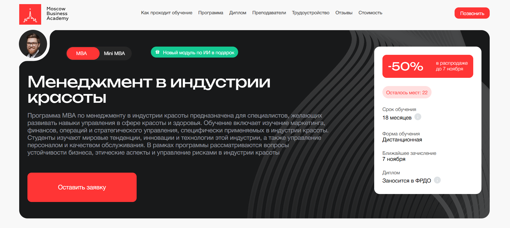- ✅ Официальный сайт: moscow.mba
- 💸 Цена обучения: со скидкой 50% - 355 000 ₽ при полной оплате.
- 💳 Рассрочка: от 9 861 ₽/мес до 36 месяцев, без переплаты, первый платеж через месяц.
- 📚 Формат: дистанционное обучение: видеолекции, практические задания, тесты, индивидуальные проекты и обратная связь от преподавателей.
- ⏳ Продолжительность: 18 месяцев.
- 📜 Документ: международный диплом установленного образца, заносится в ФРДО.
- 📝 Трудоустройство: помощь в составлении резюме, подготовке к собеседованиям и построении личного бренда в индустрии.
- 🔷 Для кого подходит курс: владельцам салонов, администраторам, руководителям салонов красоты, а также тем, кто планирует открыть собственный бизнес в сфере индустрии красоты.
Особенности:
Обучение проходит в дистанционном формате и позволяет совмещать учебу с работой. Программа разработана для тех, кто управляет салонами красоты или планирует открыть собственный бизнес. В процессе обучения студенты изучают финансовое планирование, маркетинг, управление персоналом и эффективные стратегии развития предприятий индустрии красоты. Программа регулярно обновляется, чтобы соответствовать требованиям рынка. После успешного прохождения обучения слушатели получают диплом международного уровня. Учебная платформа удобна, поддерживает индивидуальный график обучения и доступ к материалам из любой точки мира. Обучение проходит под руководством практикующих экспертов, которые делятся опытом из реальных кейсов.
Чему учатся студенты:
- Разрабатывать стратегию развития салона и повышать эффективность бизнеса
- Осваивать инструменты маркетинга и продвижения услуг в сфере красоты
- Анализировать финансовые показатели и управлять бюджетом салона
- Организовывать работу персонала и мотивировать команду мастеров
- Использовать современные digital-инструменты для продаж и коммуникации с клиентами
- Повышать уровень сервиса и качество предоставляемых услуг
Преподаватели:
- Романенко Виктория — бизнес-психолог, бизнес-тренер с опытом работы в управлении персоналом и развитии команд.
- Ангелина Шам — корпоративный бизнес-психолог, кандидат наук, автор книг по коммуникации и психологии бизнеса.
- София Кузина — эксперт по личной стратегии, коуч международного уровня PCC ICF, спикер Сколково и SkillBox.
Преимущества:
- Дистанционная форма обучения, доступная в любом удобном месте и времени
- Программа включает современные темы: digital-коммуникации и управление финансами салона
- Диплом международного образца, заносится в ФРДО
- Возможность повышения квалификации и профессиональной переподготовки
- Поддержка кураторов и экспертов на протяжении всего обучения
- Карьерные консультации и помощь в трудоустройстве после окончания курсов
- Гибкий график обучения, который позволяет совмещать учебу с работой
- Обновленная программа 2025 года с акцентом на управление эффективностью салона
Отзывы учеников:
Студенты Московской Бизнес Академии отмечают высокое качество дистанционного обучения и практическую направленность курса. Выпускники подчеркивают, что преподаватели делятся реальными примерами из бизнеса, а материалы помогают развивать профессиональные навыки управления салоном и работы с персоналом. Отзывы также отмечают удобство онлайн-платформы и возможность совмещать обучение с рабочим графиком.
Перейти на официальный сайт курса2. 🏆 Менеджмент в индустрии красоты – Московская Бизнес Академия
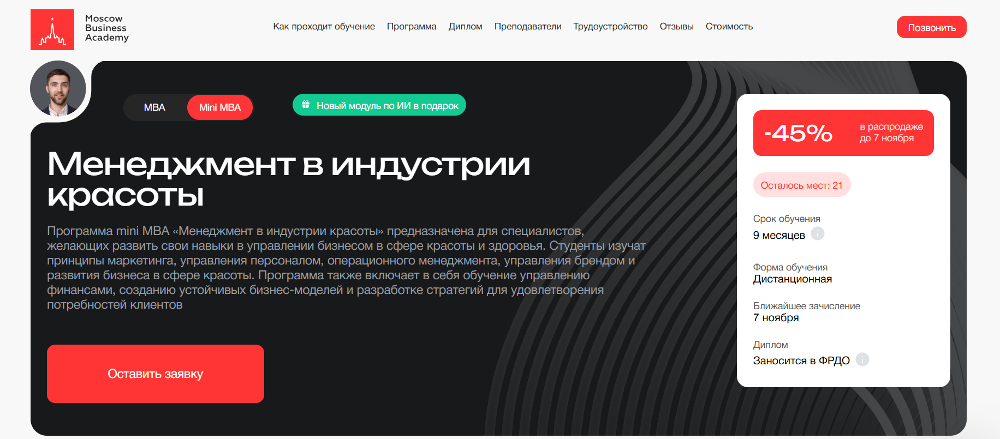- ✅ Официальный сайт: moscow.mba
- 💸 Стоимость обучения: скидка 45%, полная стоимость — 286 000 ₽.
- 💳 Рассрочка: доступна на 24 месяца от 11 916 ₽/мес без переплаты, первый платеж через месяц.
- 📚 Формат: дистанционный формат — видеолекции, тесты, практические задания, индивидуальные проекты и обратная связь от преподавателей.
- ⏳ Продолжительность: 9 месяцев.
- 📜 Документ: международный диплом установленного образца, заносится в ФРДО.
- 📝 Трудоустройство: помощь в составлении резюме, подготовке к собеседованиям, формировании конкурентного портфолио.
- 🔷 Для кого подходит курс: владельцам салонов, управляющим салонами, администраторам салонов, а также тем, кто планирует открытие собственного бизнеса в индустрии красоты.
Особенности:
Обучение проводится в дистанционном формате и подходит для специалистов, которые хотят совмещать обучение с работой. Программа обучения направлена на развитие профессиональных навыков управления салонами красоты, развитие бизнеса и повышение эффективности салона. В процессе обучения слушатели изучают аспекты управления персоналом, маркетинг, финансовое планирование и инструменты продвижения услуг. Академия помогает администратору салона, управляющему или директору салона развить лидерские качества и освоить эффективные стратегии управления. После успешного прохождения обучения студенты получают официальный диплом, который подтверждает квалификацию и открывает возможности карьерного роста в сфере индустрии красоты.
Чему учатся студенты:
- Эффективному управлению салоном и командой мастеров
- Разработке стратегии развития и повышению эффективности салона
- Маркетинговым инструментам и продвижению услуг в сети
- Финансовому планированию и анализу показателей салона
- Созданию и развитию бренда в сфере индустрии красоты
- Работе с клиентами и повышению качества сервиса
- Организации процессов при открытии салона и управлению сетью салонов
Преподаватели:
- Ангелина Шам — корпоративный бизнес-психолог, кандидат наук, автор книг по психологии и коммуникации, эксперт по управлению персоналом.
- Елена Миркина — президент Фонда повышения потенциала, клинический психолог, эксперт по тьюторству, сооснователь Gestalt ODA.
- Дарья Дубровская — экс-директор по логистике и закупкам компании «ЛЕД-Эффект», практикующий специалист по бизнес-процессам.
Преимущества:
- Дистанционное обучение с доступом из любой точки мира
- Актуальная программа 2025 года, учитывающая тенденции рынка индустрии красоты
- 70% практики — реальные кейсы и задания для развития управленческих навыков
- Преподаватели — эксперты с опытом работы в ведущих компаниях
- Возможность повысить квалификацию и открыть собственный бизнес в сфере красоты
- Поддержка кураторов и карьерных консультантов на всех этапах обучения
- После окончания обучения выпускники получают официальный диплом и помощь в трудоустройстве
Отзывы учеников:
Студенты отмечают удобный график обучения, высокий уровень преподавателей и возможность применять знания в реальной работе. Выпускники сообщают, что после прохождения курсов им удалось повысить эффективность салона, увеличить продажи услуг и открыть собственные студии красоты.
Перейти на официальный сайт курса3. 🏆 Директор салона красоты — Академия Eduson
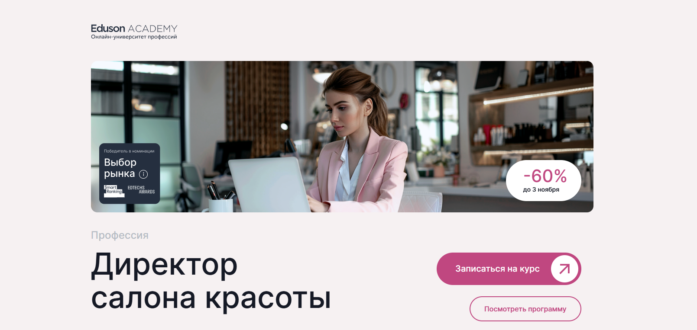- ✅ Официальный сайт: eduson.academy
- 💸 Цена обучения: от 47 600 ₽ со скидкой.
- 💳 Рассрочка: беспроцентная на 12 месяцев от 3 966 ₽/мес, онлайн-оформление за 2 минуты.
- 📚 Формат: дистанционное обучение, 188 интерактивных уроков, 34 бизнес-кейса, 48 тренажеров, домашние задания с обратной связью, дипломный проект.
- ⏳ Продолжительность: 6 месяцев.
- 📜 Документ: удостоверение о повышении квалификации установленного образца.
- 📝 Трудоустройство: индивидуальная бизнес-сессия с экспертом, поддержка куратора и помощь в развитии собственного салона.
- 🔷 Для кого подходит курс: для директоров и администраторов салонов, управляющих, владельцев салонов и специалистов, планирующих открыть собственный бизнес в сфере индустрии красоты.
Особенности:
Обучение проходит в дистанционном формате и подходит для тех, кто хочет повысить эффективность салона и овладеть современными методами управления. Программа охватывает ключевые аспекты ведения бизнеса в сфере красоты: от финансового планирования до маркетинга и управления персоналом. Студенты учатся разрабатывать стратегию развития, применять инструменты маркетинга для привлечения клиентов и оценивать эффективность бизнес-процессов. После окончания обучения слушатели получают официальный документ о повышении квалификации, подтверждающий профессиональные навыки. Доступ к учебным материалам сохраняется навсегда, а обновления курса предоставляются бесплатно.
Чему учатся студенты:
- Организовывать работу салона и управлять командой мастеров
- Использовать современные инструменты маркетинга и CRM-системы
- Разрабатывать финансовую и рекламную стратегию
- Оценивать эффективность бизнес-процессов и повышать прибыльность
- Применять правовые нормы и стандарты индустрии красоты
- Создавать систему мотивации и контроля персонала
Преподаватели:
- Преподаватели Академии Eduson — опытные практики в сфере управления салонами, маркетингу и финансам, эксперты с подтвержденным профессиональным образованием и стажем в индустрии красоты.
Преимущества:
- Дистанционный формат позволяет совмещать обучение с работой
- Доступ к курсу и обновлениям остаётся навсегда
- Индивидуальная поддержка куратора в течение года
- Официальное удостоверение о повышении квалификации
- Разработка выпускного проекта с реальной бизнес-задачей
- Практические кейсы и тренажеры по управлению и финансам
- Бизнес-сессия с экспертом в подарок
Отзывы учеников:
Выпускники отмечают практическую направленность программы, удобный график обучения и поддержку преподавателей. Среди преимуществ — понятные материалы, реальные примеры из работы салонов и возможность применить знания на практике уже во время прохождения курса. Средний рейтинг программы — 4,8 из 5.
Перейти на официальный сайт курса4. Управляющий в индустрии красоты и здоровья — Moscow Business School
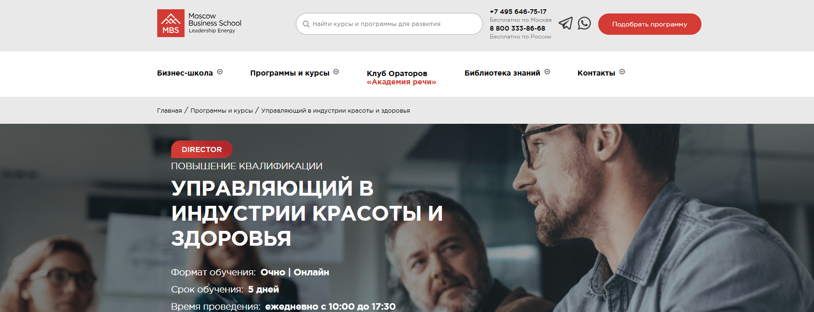- ✅ Официальный сайт: mbschool.ru
- 💸 Цена обучения: от 71 900 ₽ (при оплате онлайн скидка 10%).
- 💳 Рассрочка: доступна от 2 996 ₽/мес, условия уточняются при оформлении заявки.
- 📚 Формат: очно и онлайн; дистанционные занятия включают лекции, кейсы, тесты и практические задания.
- ⏳ Продолжительность: 5 дней, ежедневно с 10:00 до 17:30.
- 📜 Документ: удостоверение о повышении квалификации или сертификат Moscow Business School.
- 📝 Трудоустройство: 85% выпускников получают повышение или переходят на новую должность в течение года.
- 🔷 Для кого подходит курс: для владельцев салонов, администраторов и руководителей предприятий сферы красоты, желающих повысить эффективность салона и развить профессиональные навыки управления.
Особенности:
Программа создана для владельцев бизнеса и руководителей салонов, стремящихся повысить уровень сервиса и эффективность управления персоналом. Обучение проводится в разных форматах — очно и дистанционно, что позволяет совмещать график работы и учебу. В процессе обучения слушатели изучают финансовое планирование, маркетинговые инструменты и юридические аспекты индустрии. Курсы помогают развивать управленческие и коммуникационные навыки, необходимые для построения успешного бизнеса. После успешного прохождения слушатели получают официальный документ установленного образца, подтверждающий квалификацию. Moscow Business School предлагает обучение с применением современных методик, направленных на развитие личной эффективности и роста доходов предприятий индустрии красоты.
Чему учатся студенты:
- Открытию и развитию салона или клиники
- Построению эффективной бизнес-модели и рестайлингу предприятия
- Пониманию законодательной базы индустрии красоты
- Финансовому планированию и повышению эффективности салона
- Применению современных инструментов маркетинга
- Управлению персоналом и клиентским сервисом
- Разработке стратегий продвижения услуг и программ лояльности
Преподаватели:
- Николенко Надежда Владимировна — эксперт в области правового обеспечения медицинских учреждений, член ассоциации юристов, консультант, бизнес-тренер.
- Богачева Елена Львовна — международный эксперт по веллнесс-технологиям, автор «Энциклопедии Спа и Веллнесс», коуч и организатор отраслевых мероприятий.
Преимущества:
- Гибкий выбор формата обучения: очно или дистанционно
- Возможность совмещать обучение с работой
- Реальные кейсы и практические задания от экспертов-практиков
- Дипломы и сертификаты, признанные работодателями отрасли
- Поддержка преподавателей и индивидуальный подход
- Современные инструменты маркетинга и управления персоналом
- Карьерные возможности и профессиональное развитие после окончания курсов
Отзывы учеников:
Выпускники отмечают высокое качество обучения, опыт преподавателей и практическую пользу полученных знаний. Многие упоминают удобный формат, который позволяет совмещать обучение с работой, а также возможность применить полученные инструменты в собственных салонах. Подчеркивается отличная организация и поддержка менеджеров школы.
Перейти на официальный сайт курса5. Как открыть прибыльный бизнес в beauty-индустрии: от лицензии до экономики — Moscow Business School
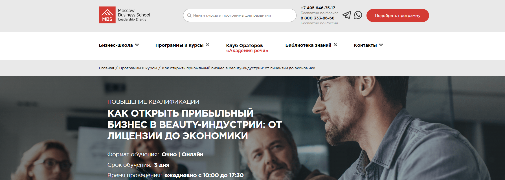- ✅ Официальный сайт: mbschool.ru
- 💸 Цена обучения: 55 900 ₽ (при оплате онлайн — скидка 10%, итог 50 310 ₽).
- 💳 Рассрочка: доступна 2 329 ₽/мес , для физических и юридических лиц.
- 📚 Формат: очный и дистанционный формат обучения, лекции, кейсы, практические занятия, консультации с преподавателями.
- ⏳ Продолжительность: 3 дня, ежедневно с 10:00 до 17:30.
- 📜 Документ: удостоверение о повышении квалификации или сертификат Moscow Business School государственного образца.
- 📝 Трудоустройство: выпускники получают документ, подтверждающий повышение квалификации, и могут претендовать на позиции управляющего или директора салона.
- 🔷 Для кого подходит курс: для владельцев салонов красоты, администраторов, руководителей салонов, владельцев бизнеса в сфере индустрии красоты и тех, кто планирует открыть собственный салон.
Особенности:
Обучение проводится в очном и дистанционном формате, что позволяет совмещать обучение с рабочим графиком. Программа разработана для тех, кто хочет эффективно управлять салоном красоты, развивать сетью салонов и освоить современные инструменты маркетинга. Студенты изучают юридические аспекты открытия салона, финансовое планирование и методы повышения эффективности бизнеса. В процессе обучения участники получают практические навыки управления персоналом и продвижения услуг. Курс помогает оценивать эффективность салона, выстраивать стратегию развития и предотвращать ошибки на старте бизнеса. Программа ориентирована на реальные кейсы и ситуации из сферы услуг, что делает обучение максимально прикладным.
Чему учатся студенты:
- Проводить маркетинговые исследования и анализировать рынок индустрии красоты
- Разрабатывать стратегию развития и бизнес-модель предприятия
- Осваивать юридические аспекты открытия бизнеса в сфере услуг
- Создавать экономические модели и рассчитывать показатели эффективности салона
- Формировать команду мастеров и управлять персоналом
- Разрабатывать эффективные маркетинговые инструменты и план продвижения услуг
Преподаватели:
- Надежда Владимировна Николенко — член Ассоциации юристов, эксперт-практик в правовом обеспечении медицинских учреждений, консультант по защите прав врачей и клиник.
- Елена Львовна Богачева — международный эксперт в области веллнесс-технологий, бизнес-консультант, автор «Энциклопедии Спа и Веллнесс», организатор отраслевых мероприятий.
Преимущества:
- Обучение проводится в удобных форматах: очно и онлайн
- После окончания обучения выдается официальный документ государственного образца
- Курс дает практические знания и реальные кейсы из индустрии красоты
- 85% выпускников получают повышение или открывают собственный бизнес
- Обучение ведут эксперты-практики с опытом управления предприятиями индустрии
- Предоставляется комплект учебных материалов и кофе-паузы во время занятий
- Возможность корпоративного обучения и индивидуальной адаптации программы под нужды компании
Отзывы учеников:
Студенты отмечают, что обучение помогает структурировать знания, понять юридические и финансовые аспекты открытия салона и повысить личную эффективность. Многие выпускники отмечают практичность занятий, живое общение с преподавателями и возможность получить полезные контакты для развития бизнеса в сфере красоты.
Перейти на официальный сайт курса6. Менеджмент в индустрии красоты – Московский институт профессионального образования
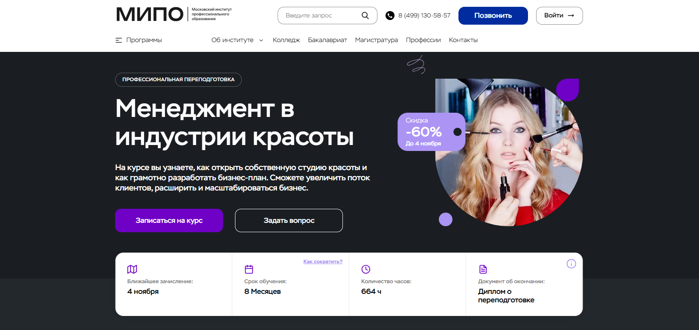- ✅ Официальный сайт: mipo.msk.ru
- 💸 Цена: 44 700 ₽ (скидка 60%).
- 💳 Рассрочка: до 24 месяцев без переплат, от 1 863 ₽ в месяц.
- 📚 Формат: дистанционный формат обучения: онлайн-вебинары, видеолекции, тесты, практические кейсы, доступ к учебным материалам и поддержка куратора.
- ⏳ Продолжительность: 8 месяцев, 664 часа.
- 📜 Документ: диплом о профессиональной переподготовке с регистрацией в Федеральном реестре (ФИС-ФРДО).
- 📝 Трудоустройство: развитие профессиональных навыков и повышение квалификации для карьерного роста или открытия собственного бизнеса.
- 🔷 Для кого подходит курс: для администраторов салонов, владельцев бизнеса, руководителей салонов красоты, управляющих студиями и предпринимателей сферы услуг.
Особенности:
Курс направлен на развитие управленческих и маркетинговых компетенций в сфере индустрии красоты. Программа помогает освоить инструменты маркетинга, научиться управлять командой мастеров и оценивать эффективность салона. Обучение проходит в дистанционном формате, что позволяет совмещать обучение с работой. В процессе обучения слушатели разрабатывают стратегию развития салона, изучают основы финансового планирования и юридические аспекты ведения бизнеса. После успешного прохождения курса студенты получают официальный диплом установленного образца. Программа дает возможность освоить современные инструменты управления и применять их в своих салонах или сетях предприятий индустрии красоты.
Чему учатся студенты:
- Разрабатывать стратегию управления салоном и систему продаж услуг;
- Осваивать инструменты маркетинга и продвижения бренда;
- Эффективно управлять персоналом и мотивировать сотрудников;
- Понимать финансовые показатели бизнеса и планировать бюджет;
- Решать юридические вопросы, связанные с открытием салона и франшизой;
- Анализировать рынок индустрии красоты и создавать успешные форматы обучения и развития бизнеса.
Преподаватели:
- Морозов Сергей Александрович — практик, директор компании, преподаватель по менеджменту в индустрии красоты.
- Моторин Дмитрий Викторович — эксперт по управлению маркетингом и системам продаж.
- Кузнецова Татьяна Викторовна — бизнес-тренер по управлению проектами B2B и B2G.
- Михновец Дарья Александровна — психолог, бизнес-тренер, специалист по мотивации персонала.
- Шакаров Михаил Русланович — преподаватель-практик, бизнес-тренер по эффективному управлению.
- Назаров Алексей Игоревич — эксперт по управлению системой продаж и развитию сети салонов.
Преимущества:
- Дистанционное обучение в удобном графике без отрыва от работы;
- Получение диплома о профессиональной переподготовке государственного образца;
- Практические навыки управления салоном и персоналом;
- Современные маркетинговые инструменты и эффективные стратегии продаж услуг;
- Поддержка кураторов и преподавателей с опытом более 7 лет;
- Возможность открыть собственную студию красоты и развить сетью салонов;
- Программа соответствует профессиональным стандартам индустрии;
- Платформа обучения помогает совмещать обучение с личной занятостью.
Отзывы учеников:
Выпускники отмечают удобный дистанционный формат и качественные учебные материалы. По их отзывам, обучение позволило повысить эффективность салона и выстроить систему управления персоналом. Многие слушатели прошли обучение, открыли собственные салоны красоты и повысили личную эффективность. Отмечают высокий уровень преподавателей и практическую пользу курса для развития бизнеса.
Перейти на официальный сайт курса7. Менеджмент в индустрии красоты — Московский институт профессионального образования (МИПО)
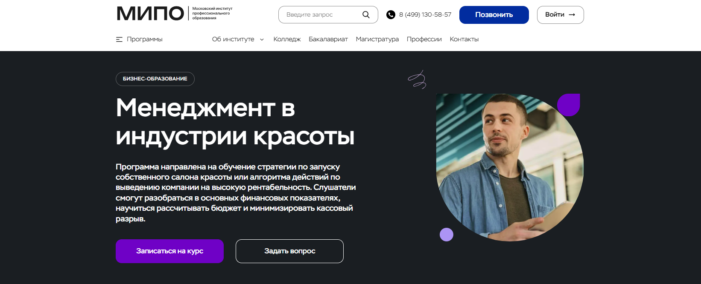- ✅ Официальный сайт: mipo.msk.ru
- 💸 Цена: действует скидка 30% от полной стоимости обучения, уточняется у менеджера.
- 💳 Рассрочка: доступна программа беспроцентной рассрочки и возможность оформить налоговый вычет 13%.
- 📚 Формат: дистанционный формат обучения — онлайн-вебинары, разбор реальных кейсов, тестирование, практические задания и поддержка персонального куратора.
- ⏳ Продолжительность: 1 год 6 месяцев, 2700 часов.
- 📜 Документ: диплом MBA «Мастер делового администрирования», официальный документ РФ с внесением в реестр ФИС-ФРДО и международным приложением Diploma Supplement.
- 📝 Трудоустройство: выпускники повышают финансовые показатели и переходят на руководящие позиции в сфере индустрии красоты.
- 🔷 Для кого подходит курс: владельцы салонов и студий красоты, управляющие, администраторы, директора, менеджеры проектов и предприниматели, планирующие открыть собственный бизнес в сфере услуг.
Особенности:
Образовательная программа создана специально для руководителей салонов красоты и владельцев бизнеса, которые хотят повысить эффективность работы и развить управленческие навыки. Обучение проходит в дистанционном формате, что позволяет совмещать профессиональную деятельность с учебой. Студенты изучают стратегию развития предприятия индустрии, учатся разрабатывать бизнес-планы, анализировать финансовые показатели и управлять персоналом. Платформа обучения предоставляет доступ к видеоматериалам, кейсам и консультациям экспертов. Программа включает современные маркетинговые инструменты и практические методы привлечения клиентов. По окончании обучения выпускники получают официальный диплом и возможность увеличить доходность своих салонов.
Чему учатся студенты:
- Понимать финансовые показатели и формировать стратегию развития салона
- Разрабатывать эффективные маркетинговые стратегии и инструменты продвижения услуг
- Управлять командой мастеров и повышать уровень сервиса
- Минимизировать кассовые разрывы и грамотно планировать бюджет
- Оценивать эффективность салона и внедрять современные решения
- Осваивать правовые аспекты управления и взаимодействия с контрагентами
- Создавать устойчивую клиентскую базу и удерживать лучших специалистов
Преподаватели:
- Дмитрий Коноплянский — основатель сети ювелирных салонов, советник группы «НЛМК», «НК РОСНЕФТЬ».
- Сергей Ряковский — эксперт по стратегическому менеджменту, автор пособий по управлению персоналом.
- Траншье Янник — специалист по инновационному менеджменту, технологический брокер, предприниматель.
- Татьяна Баранова — эксперт по деловому этикету и протоколу, основатель проекта «Про ЭТИКЕТ».
- Александр Додерер — руководитель агентства стратегических коммуникаций GRUPPE DREI.
- Александр Борисов — эксперт по бизнес-планированию, инвестиционному и финансовому анализу.
Преимущества:
- Обучение в дистанционном формате с доступом к материалам 24/7
- Поддержка персонального куратора на всех этапах обучения
- Диплом MBA международного уровня, внесённый в реестр ФИС-ФРДО
- Практическая программа, основанная на кейсах из индустрии красоты
- Возможность совмещать обучение с работой и управлением собственным бизнесом
- Экспертные преподаватели с опытом управления сетями салонов
- Современные инструменты маркетинга и управления персоналом
- Повышение квалификации и реальный рост личной эффективности
Отзывы учеников:
Студенты отмечают удобный дистанционный формат, поддержку кураторов и актуальность учебных материалов. Многие подчеркивают, что программа помогла систематизировать опыт, улучшить управление салоном и повысить прибыль. Отзывы подтверждают высокий уровень преподавания и практическую направленность обучения.
Перейти на официальный сайт курса8. Менеджмент в индустрии красоты – Московский Институт Профессионального Образования (МИПО)
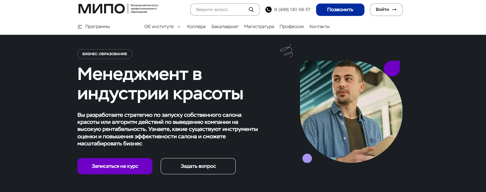- ✅ Официальный сайт: mipo.msk.ru
- 💸 Цена: указана со скидкой 30%, уточняйте стоимость обучения у менеджера.
- 💳 Рассрочка: предоставляется, действует гибкая система оплаты курсов.
- 📚 Формат: дистанционный формат — онлайн-вебинары, лекции, тесты, практические задания, общение с преподавателями и персональным куратором, доступ к видеоматериалам и учебным материалам в любое время.
- ⏳ Продолжительность: 9 месяцев, 1260 академических часов.
- 📜 Документ: диплом MBA государственного образца с внесением в Федеральный реестр ФИС-ФРДО и международным приложением Diploma Supplement.
- 📝 Трудоустройство: по статистике института, 72% выпускников трудоустраиваются в более престижные компании, 94% увеличивают доходы и эффективность салона.
- 🔷 Для кого подходит курс: для владельцев салонов, управляющих салоном, администраторов салонов, руководителей салонов красоты и тех, кто планирует открытие собственного бизнеса в сфере индустрии красоты.
Особенности:
Обучение проходит в дистанционном формате, что позволяет совмещать обучение с работой. Студенты получают практические знания для управления салоном, осваивают инструменты маркетинга, разработки стратегии и повышения эффективности салона. Программа включает реальные кейсы, которые помогают владельцам бизнеса и руководителям салонов развить профессиональные навыки и освоить эффективные стратегии управления. После успешного прохождения курса выпускники получают официальный диплом, подтверждающий квалификацию руководителя в индустрии красоты. Формат дистанционного образования предоставляет гибкий график обучения и доступ к современным форматам обучения, что делает процесс комфортным и результативным.
Чему учатся студенты:
- Разрабатывать стратегию открытия салона и пути повышения эффективности салона
- Анализировать финансовые показатели и управлять бюджетом
- Использовать инструменты маркетинга для продвижения услуг
- Формировать команду мастеров и развивать навыки управления персоналом
- Повышать уровень сервиса и качество услуг
- Оценивать эффективность работы сотрудников и внедрять улучшения
- Понимать юридические аспекты ведения бизнеса в сфере красоты
Преподаватели:
- Дмитрий Коноплянский — основатель сети ювелирных салонов, советник компаний «НЛМК» и «НК Роснефть».
- Сергей Ряковский — эксперт по стратегическому менеджменту и управлению персоналом.
- Траншье Янник — эксперт в инновационном менеджменте, предприниматель с международным опытом.
- Татьяна Баранова — эксперт по деловому этикету, основатель проекта «Про ЭТИКЕТ».
- Александр Борисов — эксперт по бизнес-планированию и инвестиционному анализу.
- Александр Додерер — глава агентства стратегических коммуникаций GRUPPE DREI.
Преимущества:
- Дистанционное обучение в удобном темпе и в любом удобном месте
- Персональный куратор и поддержка преподавателей на всех этапах прохождения обучения
- Диплом MBA, внесённый в федеральный реестр, котируется в России и за рубежом
- Программа разработана российскими и зарубежными экспертами с практическим опытом
- Возможность совмещать обучение с работой благодаря гибкому графику обучения
- Актуальные инструменты маркетинга и управления персоналом для владельцев бизнеса
- Возврат 13% от стоимости обучения при оформлении налогового вычета
- Поддержка выпускников и обмен опытом с успешными руководителями салонов
Отзывы учеников:
Слушатели отмечают высокий уровень преподавания, полезные практические задания и удобный формат дистанционного обучения. Большинство студентов отмечают, что после прохождения курса смогли увеличить прибыль своих салонов, повысить эффективность управления и открыть собственные студии красоты. Отдельно выделяют внимательное отношение кураторов и возможность учиться в комфортном темпе без отрыва от работы.
Перейти на официальный сайт курса9. Менеджмент и сервис в индустрии красоты — Институт профессионального образования (ИПО)
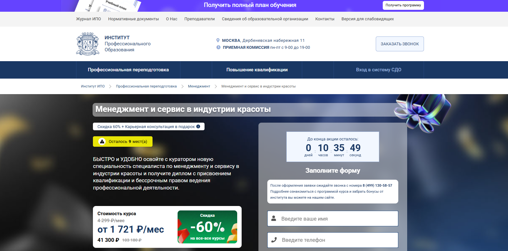- ✅ Официальный сайт: ipo.msk.ru
- 💸 Цена обучения: от 41 300 ₽ со скидкой 60%, полная стоимость 103 180 ₽.
- 💳 Рассрочка: от 1 721 ₽/мес на 12, 24 или 36 месяцев без переплаты.
- 📚 Формат: дистанционное обучение с кураторами, видеолекции, домашние задания, тесты, вебинары и доступ к библиотеке Юрайт.
- ⏳ Продолжительность: 420 часов, длительность — до 5 месяцев, возможно экстерном.
- 📜 Документ: диплом о профессиональной переподготовке «Руководитель салона красоты» с бессрочным правом ведения деятельности.
- 📝 Трудоустройство: карьерная консультация и поддержка Центра развития карьеры.
- 🔷 Для кого подходит курс: администраторы салонов, владельцы бизнеса, управляющие салоном, руководители сети салонов, специалисты сферы индустрии красоты.
Особенности:
Программа рассчитана на владельцев салонов и руководителей, стремящихся повысить эффективность салона и развить профессиональные навыки управления персоналом. Обучение проводится в дистанционном формате, что позволяет совмещать обучение с основной работой. Студенты изучают форматы обучения, современные инструменты маркетинга и способы продвижения услуг на рынке индустрии красоты. В процессе обучения слушатели осваивают практические навыки, необходимые для открытия салона, развития сети салонов и оценки финансовых показателей бизнеса. Получение диплома подтверждает квалификацию специалиста и открывает возможности карьерного роста в сфере индустрии красоты.
Чему учатся студенты:
- Управлению салоном и организацией работы команды мастеров;
- Разработке эффективных стратегий развития бизнеса и системы мотивации сотрудников;
- Планированию бюджета и финансовому анализу эффективности салона;
- Освоению инструментов маркетинга и продвижению услуг;
- Подготовке документов для открытия салона и лицензирования деятельности;
- Оценке рентабельности и повышению качества услуг;
- Развитию личной эффективности и управленческих навыков.
Преподаватели:
- Ульянкин Олег Валерьевич — кандидат экономических наук;
- Смагина Виктория Игоревна — кандидат экономических наук;
- Ветрова Екатерина Александровна — кандидат экономических наук;
- Морозов Сергей Александрович — практик, директор компании;
- Моторин Дмитрий Викторович — бизнес-тренер;
- Борисов Александр Николаевич — бизнес-консультант;
- Кузнецова Татьяна Викторовна — бизнес-тренер;
- Михновец Дарья Александровна — психолог, бизнес-тренер;
- Назаров Алексей Игоревич — эксперт по управлению системой продаж;
- Третьякова Оксана Владимировна — эксперт в HR и основатель агентства «Образование в России».
Преимущества:
- Обучение проводится полностью онлайн, без отрыва от работы;
- Выдается официальный диплом, внесенный в ФИС-ФРДО;
- Гибкий график обучения и индивидуальный подход к студентам;
- Карьерная поддержка после окончания курса;
- Возможность экстерна и сокращения сроков обучения;
- Обратная связь от преподавателей и куратора;
- Современная платформа дистанционного образования с доступом к учебным материалам;
- Помощь в открытии собственного салона и управлении сетью салонов.
Отзывы учеников:
По отзывам студентов на Яндекс и IRecommend, обучение помогает освоить новые инструменты управления салоном и повысить эффективность бизнеса. Отмечают удобный дистанционный формат, гибкий график обучения и поддержку кураторов. Многие слушатели после прохождения курсов открыли собственные студии красоты и получили стабильный доход.
Перейти на официальный сайт курса10. Менеджмент в индустрии красоты — Skillbox
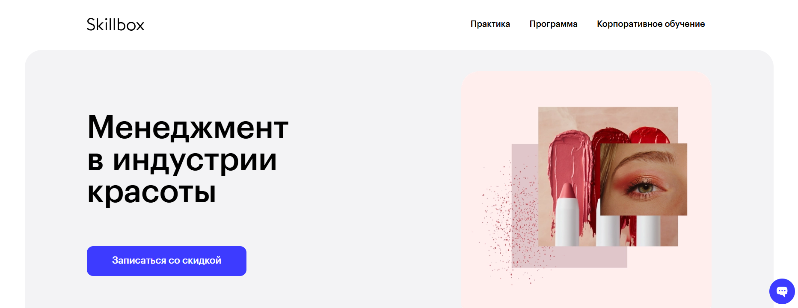- ✅ Официальный сайт: skillbox.ru
- 💸 Цена обучения: 69 958 ₽ (со скидкой 50% от 139 915 ₽).
- 💳 Рассрочка: доступна на 12 месяцев, от 5 830 ₽ в месяц.
- 📚 Формат: дистанционные видеолекции, практические задания, тесты, вебинары и офлайн-встречи с экспертами индустрии.
- ⏳ Продолжительность: 3 месяца, 14 тематических модулей.
- 📜 Документ: диплом о профессиональной переподготовке установленного образца.
- 📝 Трудоустройство: помощь в запуске или развитии собственного салона красоты и возможность карьерного роста.
- 🔷 Для кого подходит курс: для владельцев салонов, администраторов, управляющих и руководителей предприятий индустрии красоты, желающих повысить эффективность салона и освоить современные инструменты управления.
Особенности:
Программа создана совместно с сетью имидж-лабораторий «Персона» и направлена на развитие профессиональных навыков управления салоном красоты. Студенты изучают ключевые аспекты ведения бизнеса, работу с персоналом и маркетинговые инструменты продвижения услуг. Обучение проходит в дистанционном формате, что позволяет совмещать обучение с основной работой и проходить курс в любом удобном графике. После успешного прохождения курса слушатели получают официальный диплом и осваивают современные инструменты повышения эффективности салона. Обратная связь с кураторами и живая практика помогают закрепить знания и применить их к собственному бизнесу. Выпускники отмечают, что обучение помогает открыть студию красоты или масштабировать существующую сеть салонов.
Чему учатся студенты:
- Разрабатывать стратегию развития бьюти-бизнеса и планировать финансы.
- Эффективно управлять командой мастеров и персоналом салона.
- Осваивать инструменты маркетинга и продажи услуг.
- Оценивать эффективность салона и повышать качество сервиса.
- Минимизировать риски и разбираться в юридических аспектах бизнеса.
- Создавать бизнес-план для открытия салона или сети.
Преподаватели:
- Игорь Стоянов — основатель и президент сети имидж-лабораторий «Персона».
- Виктор Соколов — директор по развитию сети «Персона».
- Наталия Солнцева — директор школы стилистов «Персона».
- Нина Зайцева — управляющий партнёр «Персона», флагман TiGi.
- Анна Соколова — управляющий партнёр бизнес-школы «Персона».
- Сергей Забалуев — генеральный директор Welonda Russia.
- Алексей Бирюков — руководитель отдела развития бизнеса L’Oreal (Москва).
- Екатерина Курбатова — основатель сервиса онлайн-записи Sonline.
- Кирилл Руденко — директор по продажам YCLIENTS.
- Иван Хроменков — методолог и преподаватель, практикующий психолог.
Преимущества:
- Дистанционное обучение с возможностью совмещать обучение с работой.
- Практические задания, основанные на реальных кейсах из индустрии красоты.
- Живые встречи с топ-менеджерами сети салонов «Персона».
- Поддержка кураторов и доступ к учебным материалам навсегда.
- Развитие управленческих и финансовых навыков.
- Диплом установленного образца для подтверждения квалификации.
- Обучение проводится с акцентом на эффективное управление салоном и развитие бизнеса.
Отзывы учеников:
Выпускники отмечают, что курс помогает понять все этапы управления салоном — от найма персонала до продвижения услуг. Среди плюсов чаще всего называют высокое качество обучения, понятную подачу материала и полезные советы преподавателей. Многие слушатели отмечают рост уверенности в своих силах и успешное открытие собственных студий красоты после прохождения программы.
Перейти на официальный сайт курса11. Успешный руководитель beauty-бизнеса — Академия красоты Эколь
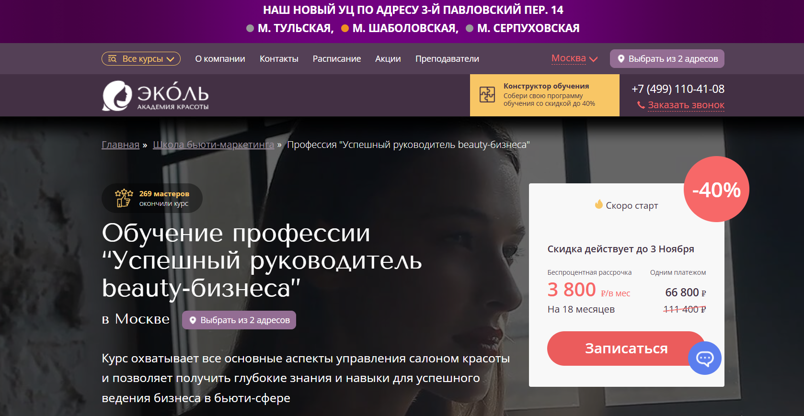- ✅ Официальный сайт: moscow.ecolespb.ru
- 💸 Цена: 66 800 ₽ (скидка 40% действует, полная стоимость 111 400 ₽)
- 💳 Рассрочка: беспроцентная, 3 800 ₽ в месяц на 18 месяцев
- 📚 Формат: очное и дистанционное обучение, видеолекции, тесты, домашние задания, консультации с преподавателями и практические занятия
- ⏳ Продолжительность: 4–10 месяцев / 169 академических часов практики
- 📜 Документ: диплом специалиста о профессиональной переподготовке
- 📝 Трудоустройство: 85% выпускников находят работу в сфере индустрии красоты в течение трёх недель, 37% открывают собственные салоны
- 🔷 Для кого подходит курс: для администраторов салонов, управляющих салоном, владельцев бизнеса и начинающих руководителей в индустрии красоты
Особенности:
Обновлённая программа обучения 2025 года охватывает все ключевые аспекты управления салонами красоты. Обучение проводится в дистанционном и очном форматах, что позволяет совмещать обучение с личным графиком. Курс подходит как действующим руководителям салонов, так и тем, кто только планирует открытие бизнеса. В процессе обучения студенты осваивают современные инструменты маркетинга, управление персоналом, основы финансового планирования и сервисного обслуживания. Академия красоты Эколь регулярно адаптирует программы обучения под требования работодателей и профессиональных стандартов сферы индустрии красоты. После успешного прохождения курса выпускники получают официальный диплом и необходимые профессиональные навыки для роста в сфере услуг.
Чему учатся студенты:
- Планировать открытие салона и формировать стратегию развития бизнеса
- Осваивать эффективные инструменты маркетинга и продвижения услуг
- Управлять командой мастеров и повышать эффективность салона
- Оценивать финансовые показатели и выстраивать систему контроля доходов
- Разрабатывать стратегию развития и повышать уровень сервиса
- Изучать юридические аспекты ведения бизнеса и минимизацию рисков
- Организовывать продажи услуг и повышать личную эффективность
Преподаватели:
- Наставники Академии Эколь — практикующие руководители и владельцы салонов красоты
- Более 1000 специалистов-практиков с опытом управления сетью салонов и ведения бизнеса в сфере индустрии красоты
- Преподаватели консультируют слушателей в процессе обучения и помогают в подготовке личных проектов
Преимущества:
- Обучение проходит в дистанционном и очном форматах с гибким графиком
- 80% занятий — практические навыки на реальных клиентах
- Предоставляется база моделей для отработки навыков и создания портфолио
- Все расходные материалы включены в стоимость курсов
- Выдается диплом установленного образца, признанный в индустрии красоты
- Возможность обучения за счет государства или материнского капитала
- Программы повышения квалификации обновляются каждые полгода
- Помощь в трудоустройстве и открытии собственных салонов
Отзывы учеников:
Студенты Академии Эколь отмечают удобство дистанционного обучения, современный формат видеолекций и доступ к практическим материалам. Среди плюсов чаще всего упоминают внимание преподавателей, возможность совмещать обучение с работой и поддержку наставников при создании собственного бизнеса. Выпускники подчеркивают, что курс помог им освоить управление салоном, повысить эффективность салона и уверенно развивать карьеру в сфере индустрии красоты.
Перейти на официальный сайт курса12. Директор салона красоты — Учебный центр «НЦПО»
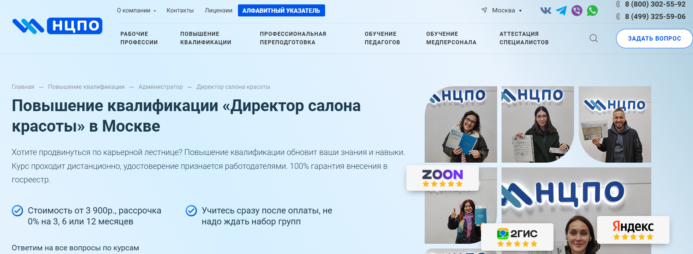- ✅ Официальный сайт: ncpo.ru
- 💸 Цена обучения: от 3 900 ₽
- 💳 Рассрочка: 0% на 3, 6 или 12 месяцев от 325 ₽/мес
- 📚 Формат: дистанционный формат — онлайн-обучение, видеолекции, тестирование, практические задания, личный кабинет с постоянным доступом
- ⏳ Продолжительность: от 36 до 144 академических часов
- 📜 Документ: удостоверение о повышении квалификации, внесённое в государственный реестр ФИС ФРДО
- 📝 Трудоустройство: официальное подтверждение квалификации, возможность карьерного роста и допуска к руководящим должностям
- 🔷 Для кого подходит курс: администраторам салона, владельцам салонов, управляющим салоном и руководителям в сфере индустрии красоты
Особенности:
Программа разработана с учётом требований Министерства образования и ориентирована на профессионалов индустрии красоты, желающих освоить новые форматы обучения и повысить эффективность салона. Обучение проводится в дистанционном формате, что позволяет проходить обучение в любом удобном графике, совмещая его с основной работой. Слушатели изучают современные методы управления салоном, разрабатывают эффективные стратегии развития, учатся оценивать эффективность работы и повышать уровень сервиса. После успешного прохождения обучения выдаётся официальный документ установленного образца, подтверждающий квалификацию. Все материалы курса сохраняются навсегда и доступны через онлайн-платформу. Работа ведётся по официальному договору с полными юридическими гарантиями.
Чему учатся студенты:
- Разрабатывать стратегию продвижения услуг и увеличения продаж
- Осваивать инструменты маркетинга для сферы индустрии красоты
- Эффективно управлять персоналом и сетью салонов
- Анализировать финансовые показатели и повышать рентабельность бизнеса
- Применять современные инструменты управления и контроля качества услуг
- Развивать личную эффективность и управленческие навыки
Преподаватели:
- Терешков Александр Леонидович — генеральный директор УЦ «НЦПО», эксперт по управлению салонами красоты
- Грезнева Диана — преподаватель, специалист по менеджменту и обучению руководителей салонов
- Малкова Анна — преподаватель по маркетингу и управлению персоналом в сфере услуг
Преимущества:
- Дистанционный формат позволяет совмещать обучение с работой
- Официальная лицензия Министерства образования № Л035-01298-77/00656750
- Скидка 1 850 ₽ при оплате в день заказа
- Беспроцентная рассрочка и гибкий график обучения
- Внесение данных в государственный реестр ФИС ФРДО
- Бессрочный доступ к учебным материалам после окончания курса
- Высокие рейтинги — Яндекс ★5.0, Google ★4.9, 2ГИС ★5.0
- Поддержка менеджеров и консультации на всех этапах прохождения курса
Отзывы учеников:
Студенты отмечают удобный дистанционный формат, грамотную организацию обучения и компетентных преподавателей. Многие выпускники подчеркивают, что курс помог повысить квалификацию, улучшить навыки управления персоналом и открыть собственные салоны. Отзывы выделяют быструю выдачу документов и профессиональную поддержку специалистов центра.
Перейти на официальный сайт курса13. Директор салона красоты — Бизнес Академия МБА СИТИ
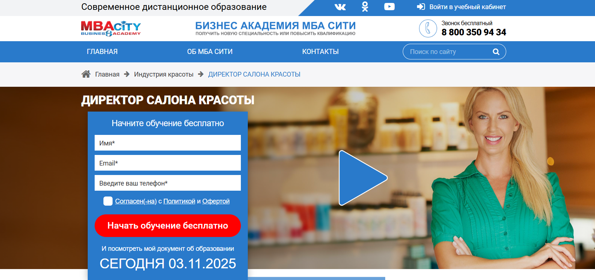- ✅ Официальный сайт: mba-city.ru
- 💸 Цена обучения: 78 000 ₽ (со скидкой 23 400 ₽).
- 💳 Рассрочка: доступна без процентов от 1 950 ₽/мес, на время прохождения обучения.
- 📚 Формат: дистанционный формат — видеолекции, тесты, практические задания, консультации преподавателей.
- ⏳ Продолжительность: 424 часа, 11 частей и тестов.
- 📜 Документ: диплом о профессиональной переподготовке, международный диплом и сертификат профстандартов.
- 📝 Трудоустройство: выпускники работают управляющими салонов, администраторами и владельцами бизнеса в индустрии красоты.
- 🔷 Для кого подходит курс: для руководителей салонов, администраторов, владельцев салонов и тех, кто планирует открыть собственный бизнес.
Особенности:
Программа создана для тех, кто стремится стать директором салона и получить востребованные профессиональные навыки в индустрии красоты. Обучение проходит полностью онлайн, что позволяет совмещать обучение с работой. Студенты осваивают управление персоналом, маркетинг и инструменты продвижения услуг. Дистанционные курсы помогают владельцам бизнеса и руководителям салонов развивать эффективность салона и формировать стратегию развития. После успешного прохождения обучения слушатели получают официальный диплом, внесённый в ФИС ФРДО, а также международный сертификат качества ISO 9001:2015. Программа направлена на освоение практических знаний, необходимых для управления салонами красоты и студиями.
Чему учатся студенты:
- Планированию и открытию салонов красоты
- Разработке эффективных стратегий и маркетинговых инструментов
- Управлению персоналом и командой мастеров
- Продвижению услуг и повышению эффективности салона
- Организации финансового планирования и продаж услуг
- Анализу рынка индустрии и формированию стратегии развития
Преподаватели:
- Эксперты МБА СИТИ — преподаватели с опытом управления сетью салонов и ведения бизнеса в сфере индустрии красоты.
- Специалисты с практическими знаниями и опытом работы руководителями салонов.
Преимущества:
- Дистанционное обучение проходит в удобном онлайн-формате
- Государственная лицензия на образовательную деятельность
- Возможность совмещать обучение с личной занятостью
- Официальный диплом и международный сертификат
- Актуальная программа с практическими модулями
- Поддержка преподавателей и консультантов в процессе обучения
- Применение полученных знаний для повышения эффективности салона
- Гибкий график обучения и доступ к материалам после окончания курсов
Отзывы учеников:
Выпускники отмечают, что дистанционное образование в МБА СИТИ удобно и помогает развить практические навыки управления салоном. Многие слушатели после прохождения курса открыли собственные салоны красоты или заняли руководящие должности. Отмечают качественную обратную связь от преподавателей и понятную подачу материала. Также хвалят стоимость курсов и возможность получить официальный диплом в кратчайшие сроки.
Перейти на официальный сайт курса14. Менеджмент и администрирование в бьюти индустрии – Academy Standart
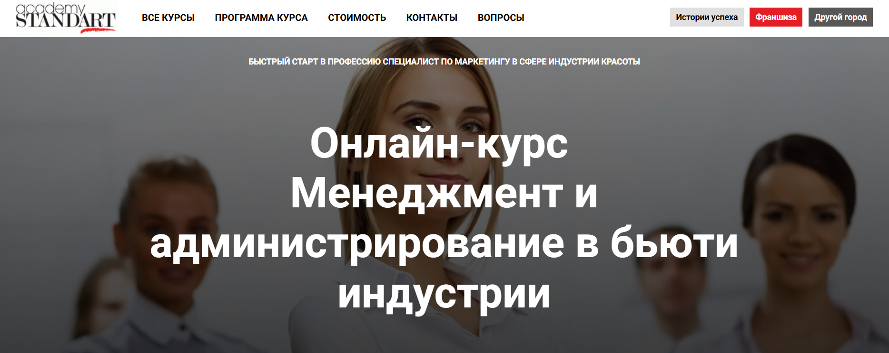- ✅ Официальный сайт: academy-standart.com
- 💸 Цена обучения: 19 900 ₽ (вместо 29 900 ₽).
- 💳 Рассрочка: доступна при оплате онлайн, подробности уточняются при записи.
- 📚 Формат: дистанционный формат — 4 вебинара, 10 видеоуроков, 15 практических заданий, аудио-презентации, чек-листы и контент-планы.
- ⏳ Продолжительность: 40 академических часов.
- 📜 Документ: официальный диплом о профессиональной переподготовке после успешного прохождения курса.
- 📝 Трудоустройство: выпускники получают практические навыки и могут работать администратором салона, управляющим или директором салона.
- 🔷 Для кого подходит курс: владельцы салонов, администраторы, управляющие, маркетологи, специалисты сферы услуг и частные мастера индустрии красоты.
Особенности:
Программа обучения создана для тех, кто хочет повысить эффективность салона и научиться управлять командой мастеров в сфере индустрии красоты. Курс проходит в дистанционном формате и позволяет совмещать обучение с работой. Обучение проводится опытными преподавателями и включает современные инструменты маркетинга, техники продаж и навыки управления персоналом. В процессе обучения слушатели осваивают эффективные стратегии продвижения услуг, учатся разрабатывать стратегию развития бизнеса и повышать уровень сервиса. Академия Standart помогает владельцам бизнеса систематизировать процессы и увеличить прибыль салона. По окончании курса выпускники получают официальный документ установленного образца.
Чему учатся студенты:
- Разрабатывать стратегию продаж и продвижения услуг в сфере красоты.
- Эффективно управлять персоналом и сервисом салона.
- Оценивать эффективность работы команды и анализировать финансовые показатели.
- Создавать уникальное торговое предложение и удерживать клиентов.
- Использовать CRM-систему для управления клиентской базой.
- Осваивать инструменты маркетинга и коммуникации с клиентами.
- Организовывать бизнес-процессы и контролировать качество услуг.
Преподаватели:
- Алина Мазуркевич — ведущий маркетолог образовательного холдинга Academy Standart.
- Евгений-Марк Жигайлов — ведущий тренер по техникам продаж, эксперт по коммуникациям и развитию бизнеса в индустрии красоты.
Преимущества:
- Дистанционное обучение в удобном графике из любого города.
- Практическая направленность программы с реальными кейсами из индустрии красоты.
- Поддержка преподавателей и персональных кураторов в процессе обучения.
- Современные методики и инструменты маркетинга для владельцев салонов.
- Доступ к учебным материалам после окончания обучения.
- Возможность повысить квалификацию и открыть собственный бизнес.
- Диплом установленного образца, подтверждающий профессиональные навыки.
Отзывы учеников:
Студенты отмечают удобный дистанционный формат и практическую пользу занятий. По отзывам выпускников, программа помогает структурировать работу салона, повысить личную эффективность и развить навыки управления. Многие подчеркивают, что обучение позволило увеличить выручку и улучшить качество обслуживания клиентов.
Перейти на официальный сайт курса15. Директор салона красоты — Международная Академия Бизнеса
- ✅ Официальный сайт: iab.ru
- 💸 Цена обучения: 78 000 ₽ (со скидкой 23 400 ₽).
- 💳 Рассрочка: возможна оплата частями, старт обучения — бесплатно.
- 📚 Формат: дистанционный формат с видеоуроками, тестами и персональным куратором.
- ⏳ Продолжительность: 424 академических часа, график обучения гибкий.
- 📜 Документ: официальный диплом о профессиональной переподготовке с международным приложением, внесенный в ФИС ФРДО.
- 📝 Трудоустройство: содействие выпускникам в поиске работы в сфере индустрии красоты.
- 🔷 Для кого подходит курс: для администраторов, управляющих и владельцев салонов, желающих повысить квалификацию и развить управленческие навыки.
Особенности:
Программа ориентирована на руководителей салонов, которые хотят освоить эффективные стратегии управления и повысить эффективность салона. Обучение проходит в дистанционном формате на современной платформе, что позволяет совмещать обучение с работой и личными делами. Курс помогает слушателям овладеть инструментами маркетинга, управления персоналом и продвижения услуг в индустрии красоты. После успешного прохождения студенты получают официальный диплом государственного образца. Международная Академия Бизнеса имеет лицензию № Л035-01298-77/00184386 и сертификаты соответствия ГОСТ Р и ISO 9001:2015, что подтверждает качество образовательных программ. Выпускники отмечают возможность открыть собственный бизнес или управлять сетью салонов, применяя полученные знания на практике.
Чему учатся студенты:
- Планировать открытие салона и разрабатывать стратегию развития бизнеса
- Осваивать инструменты маркетинга и продажу услуг
- Управлять персоналом и повышать уровень сервиса
- Оценивать эффективность салона и финансовые показатели
- Развивать личную эффективность и навыки руководителя
- Организовывать работу команды мастеров и контролировать бизнес-процессы
Преподаватели:
- Александра Бирюкова — преподаватель кондитерского дела
- Александра Ярмолова — эксперт по психологии
- Алексей Румянцев — эксперт по строительству
- Алина Куприянова — преподаватель по гостиничному бизнесу
- Алиса Мельникова — эксперт в сфере управления персоналом
Преимущества:
- Официальный диплом с международным приложением и регистрацией в ФИС ФРДО
- Гибкий график обучения и возможность начать бесплатно
- Современная платформа дистанционного образования
- Поддержка личного куратора и помощь в трудоустройстве
- Программа включает практические навыки для управления салоном
- Повышение квалификации и развитие управленческих компетенций
- Возможность открыть собственный бизнес или сеть салонов красоты
Отзывы учеников:
Выпускники отмечают удобство дистанционного обучения, гибкий график и возможность совмещать обучение с работой. Студенты подчеркивают доступность материалов и поддержку кураторов. Многие отмечают, что полученные знания помогли им повысить квалификацию, открыть собственные студии красоты и увеличить прибыль бизнеса.
Перейти на официальный сайт курсаБесплатные курсы по обучению на Директора салона красоты
Администратор салона красоты, бесплатно – Stepik
✅ Официальный сайт: stepik.orgОписание и особенности:
- Курс помогает освоить профессию администратора салона и понять ключевые аспекты управления салоном красоты.
- Обучение проводится в дистанционном формате и подходит владельцам салонов, руководителям студий и тем, кто планирует открыть собственный бизнес в индустрии красоты.
- Программа обучения охватывает темы клиентского сервиса, продаж услуг, ведения отчетности и контроля качества.
- Слушатели изучают эффективные стратегии общения с клиентами, способы продвижения услуг и инструменты маркетинга для повышения эффективности салона.
- Во время прохождения обучения участники осваивают практические навыки управления персоналом и организацию рабочего процесса мастеров.
- Курс включает изучение принципов работы с заявками, соцсетями и методами удержания постоянных клиентов студии красоты.
- Обучение проходит с опытными преподавателями, которые делятся реальными примерами из сферы индустрии и помогают развить навыки управления салоном.
- После успешного завершения курса слушатель получает официальный документ о прохождении обучения и может начать профессиональную деятельность в сфере услуг.
- Дистанционный формат позволяет совмещать обучение с работой и проходить курс в любом удобном графике.
Бесплатный курс для руководителей салонов красоты – CleverBox:CRM
✅ Официальный сайт: cleverbox-crm.comОписание и особенности:
- Программа разработана для владельцев салонов и управляющих, которые хотят повысить эффективность салона и улучшить навыки управления персоналом.
- Обучение проводится в дистанционном формате, что позволяет совмещать обучение с работой и проходить занятия в любом удобном графике.
- В процессе обучения слушатели освоят инструменты маркетинга, научатся разрабатывать стратегию развития и оценивать эффективность бизнес-процессов.
- Курс включает практические задания, помогающие формировать реальные управленческие и финансовые навыки.
- Обучение проходит онлайн, с поддержкой преподавателей и доступом к актуальным учебным материалам и кейсам из сферы индустрии красоты.
- Слушатели узнают, как выстраивать продажи услуг, управлять командой мастеров и поддерживать высокий уровень сервиса в салоне.
- После успешного прохождения курса участники получают официальный документ о профессиональной переподготовке.
- Программа подойдёт директорам салонов, владельцам бизнеса и администраторам, стремящимся развивать собственные предприятия индустрии красоты.
- Дистанционные курсы помогают системно взглянуть на управление салоном и внедрить эффективные стратегии без отрыва от работы.
Кто такой директор салона красоты?
Директор салона красоты — это управляющий, который отвечает за успешную работу всего бьюти-бизнеса. Он организует работу персонала, контролирует финансы, отвечает за качество обслуживания клиентов и развитие салона. Фактически, это человек, который превращает творческий хаос мастеров в четко отлаженный бизнес-процесс.
Что делает директор салона красоты и чем занимается?
Работа директора салона красоты включает не только управление людьми, но и глубокое понимание рынка, трендов и клиентских предпочтений. Его основная задача — сделать салон прибыльным, популярным и стабильным.
- Организация работы персонала: подбор, обучение и мотивация мастеров, администраторов и других сотрудников;
- Финансовое управление: контроль доходов и расходов, анализ прибыли, планирование бюджета;
- Маркетинг и продвижение: разработка акций, ведение соцсетей, работа с отзывами и репутацией салона;
- Клиентский сервис: создание высокого уровня обслуживания, удержание постоянных клиентов;
- Контроль качества услуг: соблюдение стандартов, проверка работы мастеров, контроль санитарных норм.
Что должен знать и уметь руководитель салона красоты?
Чтобы эффективно управлять салоном, директор должен обладать как управленческими, так и коммуникативными навыками. Важно не только понимать, как устроен бизнес, но и уметь работать с людьми.
- Знание основ менеджмента и маркетинга;
- Понимание специфики индустрии красоты;
- Навыки финансового анализа и планирования;
- Опыт работы с CRM-системами и онлайн-записью;
- Лидерские качества, стрессоустойчивость и дипломатичность;
- Умение решать конфликты и мотивировать команду.
Востребованность и зарплаты директоров салонов красоты в России
Профессия директора салона красоты остается одной из наиболее востребованных в сфере бьюти-бизнеса. Рынок активно растет, особенно в крупных городах России — Москве, Санкт-Петербурге, Екатеринбурге и Краснодаре. Спрос на опытных управленцев стабильно высокий.
- Средняя зарплата: от 100 000 до 250 000 рублей в месяц в зависимости от региона и уровня салона;
- В премиум-сегменте: до 400 000 рублей с учетом бонусов и процента от прибыли;
- В регионах: от 60 000 до 120 000 рублей.
Кроме того, многие директора получают процент от выручки, что делает доход напрямую зависимым от результатов работы.
Как стать директором салона красоты и где учиться?
Существует несколько путей к профессии директора. Обычно в эту должность приходят мастера с опытом работы, администраторы или маркетологи, которые решили развиваться в управлении бьюти-бизнесом.
- Образование: экономическое, управленческое или специализированное (в области индустрии красоты);
- Курсы повышения квалификации: «Управление салоном красоты», «Бьюти-менеджмент», «Маркетинг в индустрии красоты»;
- Онлайн-школы и тренинги: Skillbox, Нетология, Академия красоты, GetCourse и другие;
- Практика: опыт работы администратором или управляющим помогает быстро освоить все аспекты профессии.
Плюсы и минусы профессии директора салона красоты
- Плюсы: высокий доход, творческая атмосфера, возможность самореализации, карьерный рост;
- Минусы: высокая ответственность, стрессовые ситуации, необходимость постоянно контролировать персонал и процессы.
Карьерный рост и перспективы
Опытный директор может открыть собственный салон или сеть салонов, стать консультантом по управлению бьюти-бизнесом, преподавателем или бизнес-тренером. Перспективы в этой сфере огромные, особенно для тех, кто умеет сочетать креатив и бизнес-мышление.
Что включает в себя обучение на директора салона красоты?
Обучение на директора салона красоты включает изучение всех аспектов управления салоном, от финансового планирования и маркетинга до работы с персоналом и клиентами. Программы обучения направлены на развитие профессиональных навыков, необходимых для руководителей салонов и владельцев бизнеса в индустрии красоты. Слушатели осваивают эффективные стратегии управления, инструменты маркетинга, основы финансов и юридические аспекты ведения бизнеса.
Кому подойдет обучение на руководителя в бьюти-бизнесе?
Обучение идеально подходит владельцам салонов, администраторам салонов, управляющим и тем, кто планирует открытие собственного бизнеса в сфере индустрии красоты. Также курс полезен тем, кто хочет получить профессиональную переподготовку и стать управляющим салоном или директором студии красоты. Программы обучения рассчитаны на слушателей с любым уровнем подготовки.
Как проходит дистанционное обучение для директоров салонов красоты?
Дистанционное обучение проводится на современных образовательных платформах, что позволяет проходить курс в любом удобном формате и совмещать обучение с работой. Слушатели получают доступ к учебным материалам, видеоурокам и практическим кейсам. Такой формат помогает освоить инструменты маркетинга и управления без отрыва от бизнеса.
Какие навыки получает слушатель после окончания обучения?
После успешного прохождения обучения слушатель получает практические знания в области управления персоналом, финансового планирования, продвижения услуг и построения клиентской базы. Выпускники умеют оценивать эффективность салона, управлять командой мастеров и разрабатывать стратегию развития бизнеса. Эти навыки помогают увеличить прибыль и уровень сервиса в салоне.
Какие форматы обучения доступны для будущих руководителей салонов красоты?
Существуют различные форматы обучения: очный, дистанционный формат и смешанный. Очное обучение подходит тем, кто хочет живого общения с преподавателями, а дистанционные курсы позволяют учиться в любое время. Комбинированный вариант сочетает преимущества обеих форм, что делает прохождение обучения максимально гибким.
Какова стоимость обучения менеджменту в сфере красоты?
Стоимость обучения зависит от программы, формы и длительности курса. Средняя цена варьируется в зависимости от стоимости курсов и уровня образовательного центра. Многие академии предлагают гибкие условия оплаты курсов и систему скидок. При этом слушатели получают официальный диплом или сертификат установленного образца.
Что дает официальный диплом по управлению салоном красоты?
После окончания обучения слушатель получает официальный документ, подтверждающий квалификацию. Диплом или сертификат помогает повысить конкурентоспособность на рынке индустрии красоты и открыть собственный бизнес. Выпускники, прошедшие курс, могут занимать должности управляющего салоном или директора студии красоты.
Какие дисциплины включает программа обучения директора салона красоты?
Программа обучения включает управление персоналом, финансы, маркетинг, юридические аспекты деятельности, стратегическое планирование и развитие бизнеса. Особое внимание уделяется эффективным стратегиям продвижения услуг и разработке бизнес-планов. Также курс включает практические задания, которые помогают закрепить полученные знания.
Как выбрать подходящий курс обучения по менеджменту для руководителя салона красоты?
При выборе программы важно учитывать форму обучения, график обучения, репутацию образовательного центра и квалификацию преподавателей. Оптимально выбирать курсы, где обучение проводится с применением практических знаний и реальных кейсов из сферы индустрии красоты. Это позволит научиться эффективно управлять салоном и персоналом.
Можно ли совмещать обучение с работой?
Да, дистанционное обучение позволяет совмещать работу с учебой. Благодаря современным образовательным платформам можно проходить лекции и практические занятия в любом удобном графике. Такой подход помогает владельцам бизнеса развивать свои навыки, не отрываясь от текущей деятельности.
Какие преимущества дистанционного обучения?
Основные преимущества дистанционного образования — гибкость, доступность и возможность учиться в своем темпе. Слушатели получают доступ к видеоурокам, практическим материалам и онлайн-тестам. Платформы помогают контролировать процесс обучения и отслеживать результаты. Это удобно для руководителей салонов и владельцев сетей, которые ценят свое время.
Кто проводит обучение на директора салона красоты?
Обучение проводят опытные эксперты индустрии красоты — преподаватели с практическим опытом работы управляющими салонами и консультантами по развитию бизнеса. Они делятся реальными примерами и инструментами эффективного управления, помогая слушателям осваивать новые подходы к развитию салонов и студий красоты.
Можно ли пройти обучение для открытия собственного салона?
Да, курсы идеально подходят для тех, кто планирует открытие салона красоты или студии. Программы обучения включают разделы по открытию бизнеса, юридическим и финансовым аспектам, подбору персонала и продвижению услуг. После успешного завершения курса выпускник готов к запуску собственного проекта.
Чему научится директор салона красоты после обучения?
После прохождения курсов директор салона научится эффективно управлять персоналом, формировать команду мастеров, анализировать финансовые показатели и разрабатывать маркетинговые стратегии. Также он освоит навыки повышения эффективности салона и сможет внедрять современные инструменты для роста прибыли и качества услуг.
Какие документы выдаются после окончания курса?
После завершения обучения слушатели получают официальный диплом или сертификат о повышении квалификации или профессиональной переподготовке. Документы подтверждают, что выпускник обладает всеми необходимыми знаниями и практическими навыками для ведения профессиональной деятельности в сфере индустрии красоты.
Как обучение помогает повысить эффективность салона красоты?
Обучение помогает руководителям салонов внедрять эффективные управленческие решения, оптимизировать бизнес-процессы и повышать уровень сервиса. Благодаря освоению инструментов маркетинга и финансового планирования, выпускники умеют оценивать эффективность своей работы, увеличивать доходы и развивать сеть салонов красоты.
Можно ли пройти обучение в международной академии?
Да, сегодня доступно обучение в международных академиях индустрии красоты, где программы адаптированы к современным стандартам управления салонами. После прохождения таких курсов выпускники получают дипломы международного образца, что открывает возможности для работы не только в России, но и за рубежом.
Как обучение помогает начинающим предпринимателям в бьюти-сфере?
Для тех, кто планирует открыть собственный бизнес в сфере индустрии красоты, обучение становится стартом к успеху. Курсы помогают понять ключевые аспекты управления, изучить специфику рынка индустрии и разработать эффективную стратегию развития. Выпускники учатся разрабатывать стратегию продаж и строить сильный бренд.
Сколько длится обучение на директора салона красоты?
Сроки обучения зависят от программы и формата. Обычно курс длится от 1 до 6 месяцев. График обучения можно выбрать индивидуально: в очной, дистанционной или комбинированной форме. После окончания курса слушатели получают все необходимые практические знания для успешной работы в сфере услуг.
------------------------------------------------
Реклама. Информация о рекламодателе по ссылкам в статье.